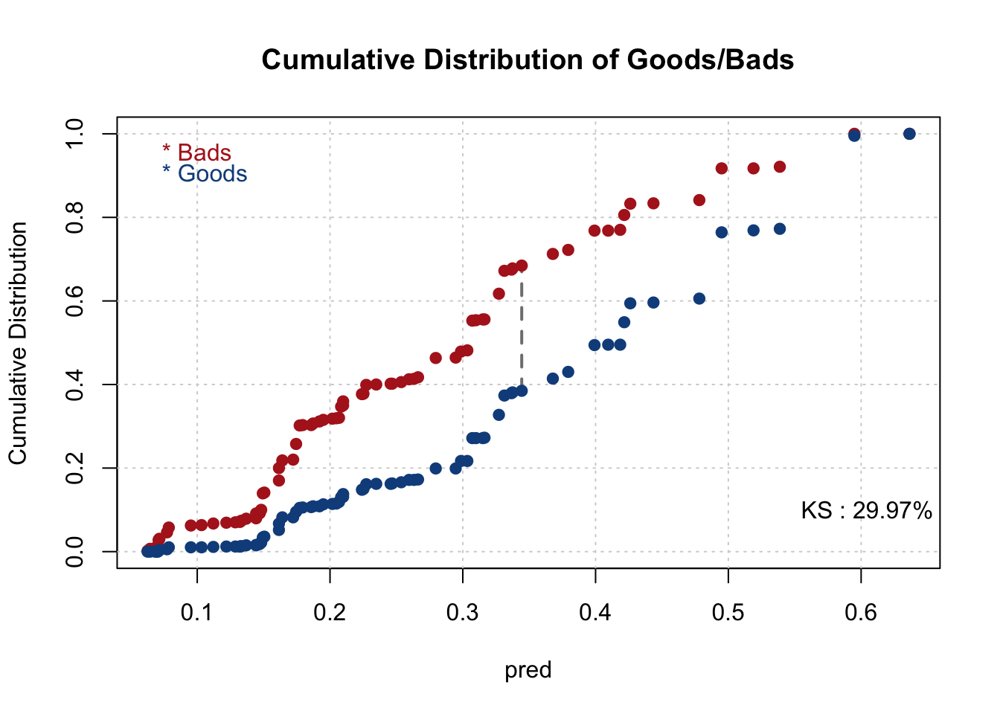
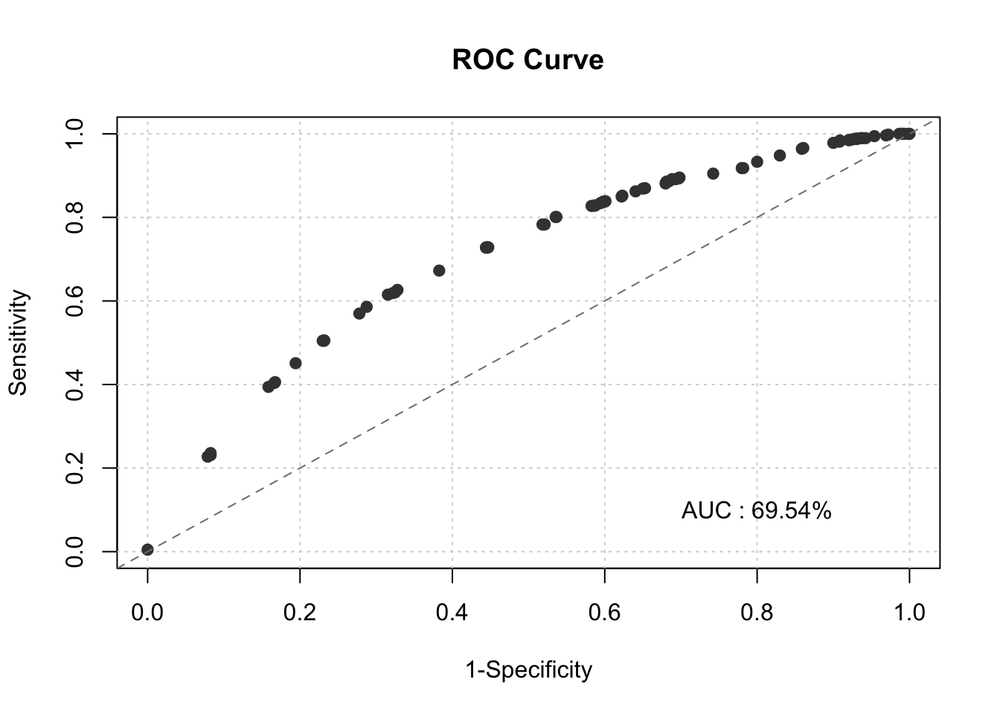
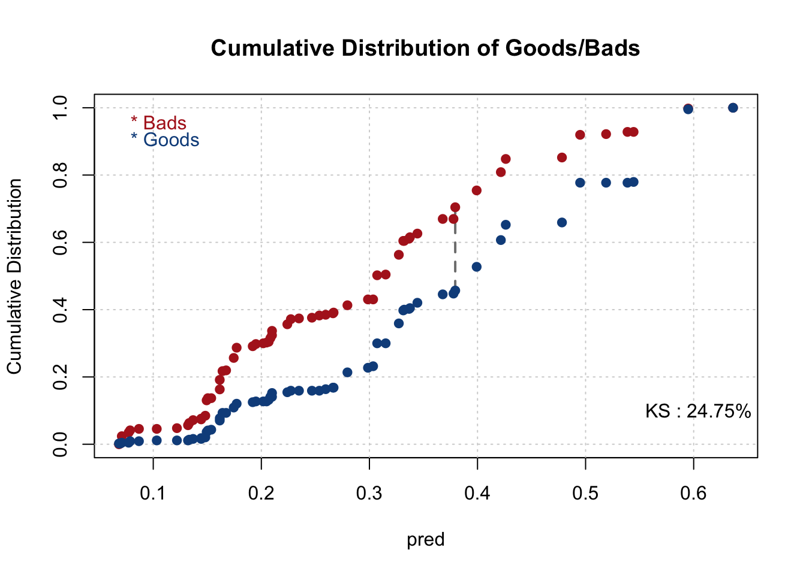
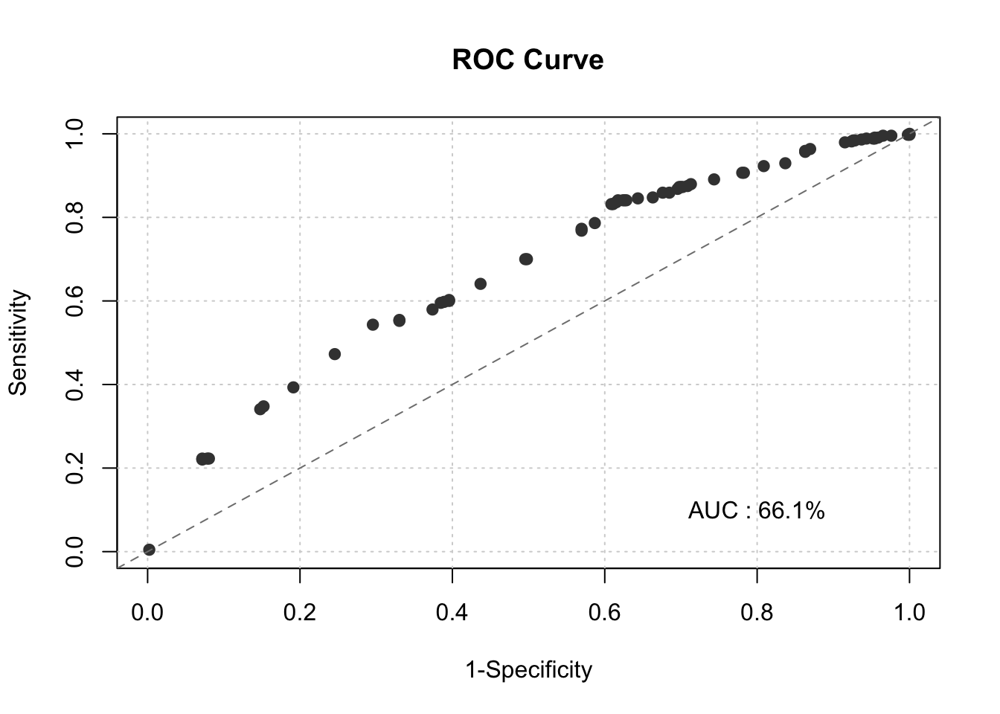
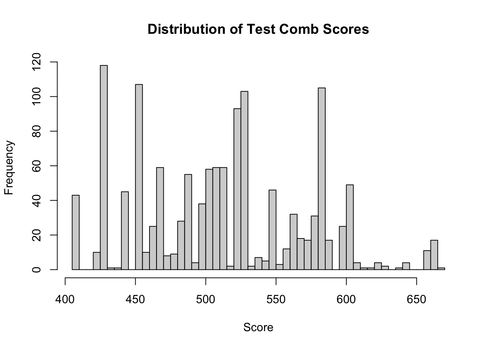
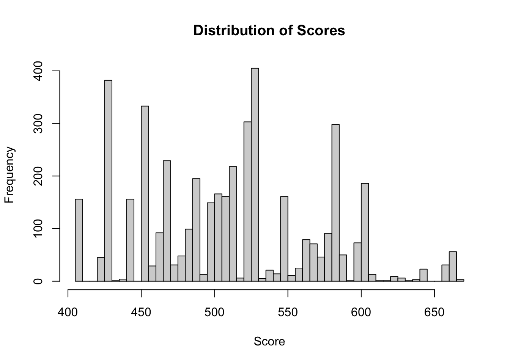
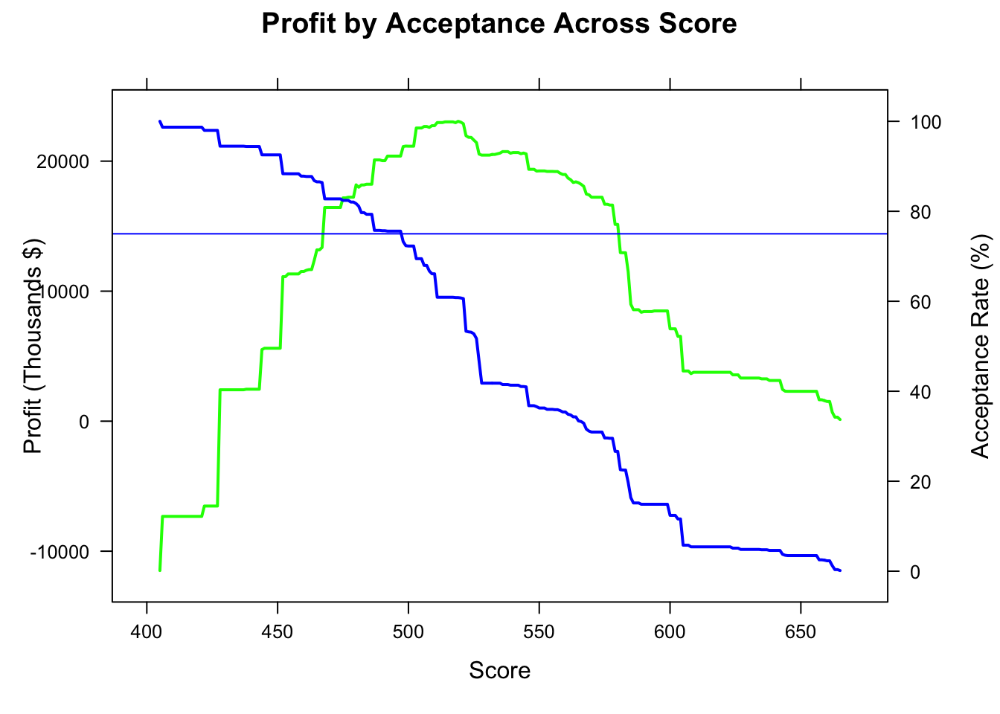

Chapter 2 Financial Score Card Model
2.1 Data Preprocessing
Loading in Packages
Reading in Data
Preview Data
## CHILDREN PERS_H AGE TMADD TMJOB1 TEL NMBLOAN FINLOAN INCOME EC_CARD BUREAU LOCATION LOANS REGN DIV CASH PRODUCT RESID NAT
## 1 0 2 51 3 999 2 0 0 1000 1 1 1 2 2 1 1300 Furniture or Carpet Lease German
## 2 1 2 55 60 999 2 2 0 2900 0 1 1 1 2 1 900 Furniture or Carpet Owner German
## 3 0 1 50 72 999 2 2 0 2300 0 1 1 1 0 0 1100 Radio or TV or Hifi Lease German
## 4 0 2 56 96 999 2 2 1 4000 0 3 1 0 0 0 7000 Furniture or Carpet Lease German
## 5 0 1 52 120 999 2 0 0 0 1 1 1 1 0 0 1200 Furniture or Carpet Lease German
## 6 0 1 63 144 999 2 2 1 2200 0 3 1 0 4 1 4000 Furniture or Carpet Lease German
## PROF CAR CARDS GB _freq_
## 1 Others Car Cheque card 0 30
## 2 Others Car no credit cards 0 30
## 3 Others Without Vehicle no credit cards 0 30
## 4 Civil Service Car no credit cards 0 30
## 5 Others Car Cheque card 0 30
## 6 Pensioner Without Vehicle no credit cards 0 30## CHILDREN PERS_H AGE TMADD TMJOB1 TEL NMBLOAN FINLOAN INCOME EC_CARD BUREAU LOCATION LOANS REGN DIV CASH PRODUCT RESID NAT
## 1 0 1 24 6 18 1 0 0 0 1 3 1 0 0 0 500 Dept. Store,Mail Lease East Germany
## 2 1 2 35 84 54 1 0 0 2500 0 2 1 0 3 1 1700 Furniture,Carpet Lease East Germany
## 3 1 3 26 36 108 2 0 1 2600 0 1 1 2 0 0 900 Radio, TV, Hifi Owner East Germany
## 4 2 3 35 168 15 1 0 0 1600 0 3 1 0 0 0 1200 Radio, TV, Hifi <NA> East Germany
## 5 0 1 20 240 9 2 0 0 0 1 3 1 0 0 0 4000 Furniture,Carpet Lease East Germany
## 6 2 4 29 30 9 2 2 0 1700 0 3 1 0 0 0 2000 Radio, TV, Hifi Lease East Germany
## PROF CAR CARDS
## 1 Others Car Cheque card
## 2 Food,Building,Ca Without Vehicle no credit cards
## 3 Others Car no credit cards
## 4 Others Without Vehicle no credit cards
## 5 Others Without Vehicle Cheque card
## 6 Others Without Vehicle no credit cardsLooking at Accepts Data Closer
## 'data.frame': 3000 obs. of 24 variables:
## $ CHILDREN: num 0 1 0 0 0 0 0 2 0 1 ...
## $ PERS_H : num 2 2 1 2 1 1 2 4 2 3 ...
## $ AGE : num 51 55 50 56 52 63 47 51 51 54 ...
## $ TMADD : num 3 60 72 96 120 144 168 168 168 168 ...
## $ TMJOB1 : num 999 999 999 999 999 999 999 999 999 999 ...
## $ TEL : num 2 2 2 2 2 2 2 2 2 2 ...
## $ NMBLOAN : num 0 2 2 2 0 2 0 0 0 0 ...
## $ FINLOAN : num 0 0 0 1 0 1 0 1 0 0 ...
## $ INCOME : num 1000 2900 2300 4000 0 2200 0 5000 2800 0 ...
## $ EC_CARD : num 1 0 0 0 1 0 0 0 0 1 ...
## $ BUREAU : num 1 1 1 3 1 3 1 1 3 1 ...
## $ LOCATION: num 1 1 1 1 1 1 1 1 1 1 ...
## $ LOANS : num 2 1 1 0 1 0 1 1 0 3 ...
## $ REGN : num 2 2 0 0 0 4 0 3 4 5 ...
## $ DIV : num 1 1 0 0 0 1 0 1 1 1 ...
## $ CASH : num 1300 900 1100 7000 1200 4000 1900 5000 6000 4000 ...
## $ PRODUCT : chr "Furniture or Carpet" "Furniture or Carpet" "Radio or TV or Hifi" "Furniture or Carpet" ...
## $ RESID : chr "Lease" "Owner" "Lease" "Lease" ...
## $ NAT : chr "German" "German" "German" "German" ...
## $ PROF : chr "Others" "Others" "Others" "Civil Service" ...
## $ CAR : chr "Car" "Car" "Without Vehicle" "Car" ...
## $ CARDS : chr "Cheque card" "no credit cards" "no credit cards" "no credit cards" ...
## $ GB : num 0 0 0 0 0 0 0 0 0 0 ...
## $ _freq_ : num 30 30 30 30 30 30 30 30 30 30 ...Removing Vars That should not be taken into consideration when dealing with loans
accepts= accepted %>%
select(-AGE, -DIV, -NAT) %>%
mutate(good= ifelse(GB==0, 1, 0),
PERS_H= ifelse(PERS_H>=7, '7+', PERS_H),
CARDS= ifelse(CARDS=='VISA mybank', 'Other credit car', CARDS),
CARDS= ifelse(CARDS=='VISA Others', 'Other credit car', CARDS),
CARDS= ifelse(CARDS=='American Express', 'Other credit car', CARDS),
GB=ifelse(GB=="0",0,1))## CHILDREN PERS_H TMADD TMJOB1 TEL NMBLOAN FINLOAN INCOME EC_CARD BUREAU LOCATION LOANS REGN CASH PRODUCT RESID PROF CAR CARDS GB _freq_ good
## 1 9 7 32 33 3 3 2 27 2 3 2 9 9 29 7 3 10 3 4 2 2 2Getting all the Factor Variables from the accepts dataset
factor_vars=NULL
for (i in (1:ncol(accepts))){
if (colnames(accepts)[i] == 'good'){
next
}
if (length(unique(accepts[,i]))<15){
factor_vars=append(factor_vars,colnames(accepts[i]))
}
}
factor_vars## [1] "CHILDREN" "PERS_H" "TEL" "NMBLOAN" "FINLOAN" "EC_CARD" "BUREAU" "LOCATION" "LOANS" "REGN" "PRODUCT" "RESID"
## [13] "PROF" "CAR" "CARDS" "GB" "_freq_"accepts[,factor_vars] = lapply(accepts[,factor_vars] , factor)
#str(accepts)
# OR #
#for (i in (1:ncol(accepts))){
#if (colnames(accepts)[i] == 'good'){
#break
#}
#if (length(unique(accepts[,i]))<15){
#accepts[,i]=as.factor(accepts[,i])
#}
#}##
## 0 1
## 1500 1500Creating Train Test Population
set.seed(0119)
train_id <- sample(seq_len(nrow(accepts)), size = floor(0.70*nrow(accepts)))
train <- accepts[train_id, ]
test <- accepts[-train_id, ]
table(train$good)##
## 0 1
## 1060 1040##
## 0 1
## 440 460Selecting + Binning Just the Important Vars
##
##
|
| | 0%
|
|-- | 5%## Warning in rbind(deparse.level, ...): number of columns of result, 14, is not a multiple of vector length 13 of arg 2##
|
|----- | 9%## Warning in rbind(deparse.level, ...): number of columns of result, 14, is not a multiple of vector length 13 of arg 2##
|
|------- | 14%## Warning in rbind(deparse.level, ...): number of columns of result, 14, is not a multiple of vector length 13 of arg 2##
|
|--------- | 18%## Warning in rbind(deparse.level, ...): number of columns of result, 14, is not a multiple of vector length 13 of arg 2##
|
|----------- | 23%## Warning in rbind(deparse.level, ...): number of columns of result, 14, is not a multiple of vector length 13 of arg 2##
|
|-------------- | 27%## Warning in rbind(deparse.level, ...): number of columns of result, 14, is not a multiple of vector length 13 of arg 2##
|
|---------------- | 32%## Warning in rbind(deparse.level, ...): number of columns of result, 14, is not a multiple of vector length 13 of arg 2##
|
|------------------ | 36%## Warning in rbind(deparse.level, ...): number of columns of result, 14, is not a multiple of vector length 13 of arg 2##
|
|-------------------- | 41%## Warning in rbind(deparse.level, ...): number of columns of result, 14, is not a multiple of vector length 13 of arg 2##
|
|----------------------- | 45%## Warning in rbind(deparse.level, ...): number of columns of result, 14, is not a multiple of vector length 13 of arg 2##
|
|------------------------- | 50%## Warning in rbind(deparse.level, ...): number of columns of result, 14, is not a multiple of vector length 13 of arg 2##
|
|--------------------------- | 55%## Warning in rbind(deparse.level, ...): number of columns of result, 14, is not a multiple of vector length 13 of arg 2##
|
|------------------------------ | 59%
|
|-------------------------------- | 64%
|
|---------------------------------- | 68%
|
|------------------------------------ | 73%
|
|--------------------------------------- | 77%## Warning in rbind(deparse.level, ...): number of columns of result, 14, is not a multiple of vector length 13 of arg 2##
|
|----------------------------------------- | 82%## Warning in rbind(deparse.level, ...): number of columns of result, 14, is not a multiple of vector length 13 of arg 2##
|
|------------------------------------------- | 86%## Warning in rbind(deparse.level, ...): number of columns of result, 14, is not a multiple of vector length 13 of arg 2##
|
|--------------------------------------------- | 91%## Warning in rbind(deparse.level, ...): number of columns of result, 14, is not a multiple of vector length 13 of arg 2##
|
|------------------------------------------------ | 95%
|
|--------------------------------------------------| 100%
## ## Char IV Process
## 4 TMJOB1 0.1993 Numeric binning OK
## 2 PERS_H 0.1845 Factor binning OK
## 19 CARDS 0.1812 Factor binning OK
## 9 EC_CARD 0.1563 Factor binning OK
## 8 INCOME 0.1388 Numeric binning OK
## 1 CHILDREN 0.0700 Factor binning OK
## 5 TEL 0.0692 Factor binning OK
## 17 PROF 0.0645 Factor binning OK
## 6 NMBLOAN 0.0542 Factor binning OK
## 18 CAR 0.0367 Factor binning OK
## 3 TMADD 0.0305 Numeric binning OK
## 7 FINLOAN 0.0298 Factor binning OK
## 15 PRODUCT 0.0199 Factor binning OK
## 13 REGN 0.0192 Factor binning OK
## 12 LOANS 0.0168 Factor binning OK
## 10 BUREAU 0.0041 Factor binning OK
## 16 RESID 0.0032 Factor binning OK
## 11 LOCATION 0.0006 Factor binning OK
## 20 GB 0.0000 Factor binning OK
## 21 _freq_ 0.0000 Factor binning OKimp_vars=NULL
for (i in 1:length(iv_summary$Char)){
if (iv_summary$IV[i]>=.10){
imp_vars=append(imp_vars, iv_summary$Char[i])
}
}
#just using train 0 to just get the important vars names
train0=train[,c(imp_vars)]
#Binning Just the Important Vars
num_names0 = names(train0)[sapply(train0, is.numeric)] # Gathering the names of numeric variables in data #
num_names0=num_names0[num_names0 != "good"]
results_all_sig_num = list() # Creating empty list to store all results #
results_all_sig_char = list()
#iv_summary <- smbinning.sumiv(df = train0, y = "good")
#iv_summary= na.omit(iv_summary)
for(i in 1:length(num_names0)){
results_all_sig_num[[num_names0[i]]] <- smbinning(df = train, y = "good", x = num_names0[i])
}## Warning in rbind(deparse.level, ...): number of columns of result, 14, is not a multiple of vector length 13 of arg 2
## Warning in rbind(deparse.level, ...): number of columns of result, 14, is not a multiple of vector length 13 of arg 2char_names0 =names(train0)[sapply(train0, is.factor)]
char_names0=char_names0[char_names0 != "GB"]
char_names0=char_names0[char_names0 != "_freq_"]
for(i in 1:length(char_names0)){
results_all_sig_char[[char_names0[i]]] <- smbinning.factor(df = train, y = "good", x = char_names0[i])
}## Warning in rbind(deparse.level, ...): number of columns of result, 14, is not a multiple of vector length 13 of arg 2
## Warning in rbind(deparse.level, ...): number of columns of result, 14, is not a multiple of vector length 13 of arg 2
## Warning in rbind(deparse.level, ...): number of columns of result, 14, is not a multiple of vector length 13 of arg 2Generating Variables of Bins and WOE Values
# Generating Variables of Bins #
for(i in 1:length(results_all_sig_num)) {
train <- smbinning.gen(df = train, ivout = results_all_sig_num[[i]], chrname = paste(results_all_sig_num[[i]]$x, "_bin", sep = ""))
}
for(i in 1:length(results_all_sig_char)) {
train <- smbinning.factor.gen(df = train, ivout = results_all_sig_char[[i]], chrname = paste(results_all_sig_char[[i]]$x, "_bin", sep = ""))
}
# Generating Variables WOE Values from Bins just created #
results_all_sig=append(results_all_sig_num,results_all_sig_char)
for (j in 1:length(results_all_sig)) {
for (i in 1:nrow(train)) {
bin_name <- paste(results_all_sig[[j]]$x, "_bin", sep = "")
bin <- substr(train[[bin_name]][i], 2, 2)
woe_name <- paste(results_all_sig[[j]]$x, "_WOE", sep = "")
if(bin == 0) {
bin <- dim(results_all_sig[[j]]$ivtable)[1] - 1
train[[woe_name]][i] <- results_all_sig[[j]]$ivtable[bin, "WoE"]
} else {
train[[woe_name]][i] <- results_all_sig[[j]]$ivtable[bin, "WoE"]
}
}
}Finding Out Which Vars Had Quasi Complete and then Making Sure None has INF in IV WOE
##
##
## Cell Contents
## |-------------------------|
## | N |
## | Chi-square contribution |
## | N / Row Total |
## | N / Col Total |
## | N / Table Total |
## |-------------------------|
##
##
## Total Observations in Table: 2100
##
##
## | train$good
## train$PERS_H | 0 | 1 | Row Total |
## -------------|-----------|-----------|-----------|
## 1 | 506 | 294 | 800 |
## | 25.861 | 26.358 | |
## | 0.632 | 0.367 | 0.381 |
## | 0.477 | 0.283 | |
## | 0.241 | 0.140 | |
## -------------|-----------|-----------|-----------|
## 2 | 176 | 265 | 441 |
## | 9.755 | 9.943 | |
## | 0.399 | 0.601 | 0.210 |
## | 0.166 | 0.255 | |
## | 0.084 | 0.126 | |
## -------------|-----------|-----------|-----------|
## 3 | 167 | 225 | 392 |
## | 4.815 | 4.908 | |
## | 0.426 | 0.574 | 0.187 |
## | 0.158 | 0.216 | |
## | 0.080 | 0.107 | |
## -------------|-----------|-----------|-----------|
## 4 | 148 | 195 | 343 |
## | 3.649 | 3.719 | |
## | 0.431 | 0.569 | 0.163 |
## | 0.140 | 0.188 | |
## | 0.070 | 0.093 | |
## -------------|-----------|-----------|-----------|
## 5 | 42 | 43 | 85 |
## | 0.019 | 0.019 | |
## | 0.494 | 0.506 | 0.040 |
## | 0.040 | 0.041 | |
## | 0.020 | 0.020 | |
## -------------|-----------|-----------|-----------|
## 6 | 17 | 8 | 25 |
## | 1.521 | 1.550 | |
## | 0.680 | 0.320 | 0.012 |
## | 0.016 | 0.008 | |
## | 0.008 | 0.004 | |
## -------------|-----------|-----------|-----------|
## 7+ | 4 | 10 | 14 |
## | 1.331 | 1.356 | |
## | 0.286 | 0.714 | 0.007 |
## | 0.004 | 0.010 | |
## | 0.002 | 0.005 | |
## -------------|-----------|-----------|-----------|
## Column Total | 1060 | 1040 | 2100 |
## | 0.505 | 0.495 | |
## -------------|-----------|-----------|-----------|
##
## ## Cutpoint CntRec CntGood CntBad CntCumRec CntCumGood CntCumBad PctRec GoodRate BadRate Odds LnOdds WoE IV
## 1 = '1' 800 294 506 800 294 506 0.3810 0.3675 0.6325 0.5810 -0.5430 -0.5239 0.1020
## 2 = '2' 441 265 176 1241 559 682 0.2100 0.6009 0.3991 1.5057 0.4092 0.4283 0.0380
## 3 = '3' 392 225 167 1633 784 849 0.1867 0.5740 0.4260 1.3473 0.2981 0.3172 0.0187
## 4 = '4' 343 195 148 1976 979 997 0.1633 0.5685 0.4315 1.3176 0.2758 0.2948 0.0141
## 5 = '5' 85 43 42 2061 1022 1039 0.0405 0.5059 0.4941 1.0238 0.0235 0.0426 0.0001
## 6 = '6' 25 8 17 2086 1030 1056 0.0119 0.3200 0.6800 0.4706 -0.7538 -0.7347 0.0061
## 7 = '7+' 14 10 4 2100 1040 1060 0.0067 0.7143 0.2857 2.5000 0.9163 0.9353 0.0055
## 8 Missing 0 0 0 2100 1040 1060 0.0000 NaN NaN NaN NaN NaN NaN
## 9 Total 2100 1040 1060 NA NA NA 1.0000 0.4952 0.5048 0.9811 -0.0190 0.0000 0.18452.2 Initial Model Build
Building Initial Scorecard Model
#need to fix gb var in test
test$GB=ifelse(test$GB=="0",0,1)
train$GB=ifelse(train$GB=="0",0,1)
initial_score <- glm(GB ~
TMJOB1_WOE +
INCOME_WOE +
CARDS_WOE + #quasi complete seperation issue with this var
PERS_H_WOE, #quasi complete seperation issue with this var
#EC_CARD_WOE, dogwater predictor
data = train,
weights = as.numeric(train$`_freq_`),
family = "binomial")
summary(initial_score)##
## Call:
## glm(formula = GB ~ TMJOB1_WOE + INCOME_WOE + CARDS_WOE + PERS_H_WOE,
## family = "binomial", data = train, weights = as.numeric(train$`_freq_`))
##
## Coefficients:
## Estimate Std. Error z value Pr(>|z|)
## (Intercept) -0.67293 0.04019 -16.745 < 0.0000000000000002 ***
## TMJOB1_WOE -0.89442 0.09564 -9.352 < 0.0000000000000002 ***
## INCOME_WOE 0.11558 0.25362 0.456 0.649
## CARDS_WOE -1.08132 0.22153 -4.881 0.00000106 ***
## PERS_H_WOE -0.83298 0.09204 -9.050 < 0.0000000000000002 ***
## ---
## Signif. codes: 0 '***' 0.001 '**' 0.01 '*' 0.05 '.' 0.1 ' ' 1
##
## (Dispersion parameter for binomial family taken to be 1)
##
## Null deviance: 4015.5 on 2099 degrees of freedom
## Residual deviance: 3677.2 on 2095 degrees of freedom
## AIC: 3687.2
##
## Number of Fisher Scoring iterations: 4Evaluate the Initial Model - Training Data
train$pred <- initial_score$fitted.values
smbinning.metrics(dataset = train, prediction = "pred", actualclass = "GB", report = 1)##
## Overall Performance Metrics
## --------------------------------------------------
## KS : 0.2997 (Unpredictive)
## AUC : 0.6954 (Poor)
##
## Classification Matrix
## --------------------------------------------------
## Cutoff (>=) : 0.3678 (Optimal)
## True Positives (TP) : 652
## False Positives (FP) : 328
## False Negatives (FN) : 408
## True Negatives (TN) : 712
## Total Positives (P) : 1060
## Total Negatives (N) : 1040
##
## Business/Performance Metrics
## --------------------------------------------------
## %Records>=Cutoff : 0.4667
## Good Rate : 0.6653 (Vs 0.5048 Overall)
## Bad Rate : 0.3347 (Vs 0.4952 Overall)
## Accuracy (ACC) : 0.6495
## Sensitivity (TPR) : 0.6151
## False Neg. Rate (FNR) : 0.3849
## False Pos. Rate (FPR) : 0.3154
## Specificity (TNR) : 0.6846
## Precision (PPV) : 0.6653
## False Discovery Rate : 0.3347
## False Omision Rate : 0.3643
## Inv. Precision (NPV) : 0.6357
##
## Note: 0 rows deleted due to missing data.smbinning.metrics(dataset = train, prediction = "pred", actualclass = "GB", report = 0, plot = "ks")
smbinning.metrics(dataset = train, prediction = "pred", actualclass = "GB", report = 0, plot = "auc")
Fixing PERS_H Variable
#test PERS_H is missing an 8+ Category so we are gonna combine 7 and 8+
#test PERS_H is missing an 8+ Category
table(test$PERS_H)##
## 1 2 3 4 5 6 7+
## 316 203 179 138 48 13 3##
## 1 2 3 4 5 6 7+
## 800 441 392 343 85 25 14Check Model on the Testing Data
for(i in 1:length(results_all_sig_num)) {
test <- smbinning.gen(df = test, ivout = results_all_sig_num[[i]], chrname = paste(results_all_sig_num[[i]]$x, "_bin", sep = ""))
}
for(i in 1:length(results_all_sig_char)) {
test <- smbinning.factor.gen(df = test, ivout = results_all_sig_char[[i]], chrname = paste(results_all_sig_char[[i]]$x, "_bin", sep = ""))
}
for (j in 1:length(results_all_sig)) {
for (i in 1:nrow(test)) {
bin_name <- paste(results_all_sig[[j]]$x, "_bin", sep = "")
bin <- substr(test[[bin_name]][i], 2, 2)
woe_name <- paste(results_all_sig[[j]]$x, "_WOE", sep = "")
if(bin == 0) {
bin <- dim(results_all_sig[[j]]$ivtable)[1] - 1
test[[woe_name]][i] <- results_all_sig[[j]]$ivtable[bin, "WoE"]
} else {
test[[woe_name]][i] <- results_all_sig[[j]]$ivtable[bin, "WoE"]
}
}
}
test$pred <- predict(initial_score, newdata=test, type='response')
smbinning.metrics(dataset = test, prediction = "pred", actualclass = "GB", report = 1)##
## Overall Performance Metrics
## --------------------------------------------------
## KS : 0.2475 (Unpredictive)
## AUC : 0.6610 (Poor)
##
## Classification Matrix
## --------------------------------------------------
## Cutoff (>=) : 0.3992 (Optimal)
## True Positives (TP) : 239
## False Positives (FP) : 136
## False Negatives (FN) : 201
## True Negatives (TN) : 324
## Total Positives (P) : 440
## Total Negatives (N) : 460
##
## Business/Performance Metrics
## --------------------------------------------------
## %Records>=Cutoff : 0.4167
## Good Rate : 0.6373 (Vs 0.4889 Overall)
## Bad Rate : 0.3627 (Vs 0.5111 Overall)
## Accuracy (ACC) : 0.6256
## Sensitivity (TPR) : 0.5432
## False Neg. Rate (FNR) : 0.4568
## False Pos. Rate (FPR) : 0.2957
## Specificity (TNR) : 0.7043
## Precision (PPV) : 0.6373
## False Discovery Rate : 0.3627
## False Omision Rate : 0.3829
## Inv. Precision (NPV) : 0.6171
##
## Note: 0 rows deleted due to missing data.
smbinning.metrics(dataset = test, prediction = "pred", actualclass = "GB", report = 0, plot = "auc")
Add Scores to Initial Model on Training Data
# Add Scores to Initial Model #
pdo <- 50
score <- 500
odds <- 20
fact <- pdo/log(2)
os <- score - fact*log(odds)
var_names <- names(initial_score$coefficients[-1])
for(i in var_names) {
beta <- initial_score$coefficients[i]
beta0 <- initial_score$coefficients["(Intercept)"]
nvar <- length(var_names)
WOE_var <- train[[i]]
points_name <- paste(str_sub(i, end = -4), "points", sep="")
train[[points_name]] <- -(WOE_var*(beta) + (beta0/nvar))*fact + os/nvar
}
colini <- (ncol(train)-nvar + 1)
colend <- ncol(train)
train$Score <- rowSums(train[, colini:colend])
hist(train$Score, breaks = 50, xlim = c(250,500), main = "Distribution of Train Scores", xlab = "Score")Scoring for the Test Data Set
for(i in var_names) {
beta <- initial_score$coefficients[i]
beta0 <- initial_score$coefficients["(Intercept)"]
nvar <- length(var_names)
WOE_var <- test[[i]]
points_name <- paste(str_sub(i, end = -4), "points", sep="")
test[[points_name]] <- -(WOE_var*(beta) + (beta0/nvar))*fact + os/nvar
}
colini <- (ncol(test)-nvar + 1)
colend <- ncol(test)
test$Score <- rowSums(test[, colini:colend])
hist(test$Score, breaks = 30, xlim = c(250,480), main = "Distribution of Test Scores", xlab = "Score")combining training and testing data back together and looking at histogram of result
2.3 Reject Inference - Clean & Prepare Reject Data
#need to make sure our levels match the accepts data exactly or we wont be able to bin properly
rejects= rejected %>%
select(-AGE, -DIV, -NAT) %>%
mutate(PERS_H= ifelse(PERS_H>=7, '7+', PERS_H),
CARDS= ifelse(CARDS=='VISA mybank', 'Other credit car', CARDS),
CARDS= ifelse(CARDS=='VISA Others', 'Other credit car', CARDS),
CARDS= ifelse(CARDS=='American Express', 'Other credit car', CARDS),
# citibank in rejects and not accepts and need to get it to match
CARDS= ifelse(CARDS=='VISA Citibank', 'Other credit car', CARDS))
for (i in (1:ncol(rejects))){
#if (colnames(accepts)[i] == 'good'){
#next
#}
if (length(unique(rejects[,i]))<15){
rejects[,i]=as.factor(rejects[,i])
}
}
#str(rejects)
#str(accepts)Reject Inference - Clean & Prepare Reject Data
#altering the bands for each binning set in the results list in case there are any additional lower points or higher points in the rejects data
#this is mostly for the numeric values
#making sure bands change in our results_all_sig_char for accepts and rejects combined
#this shouldnt cause any issues in the binner and WoE creating as long as there are the same type of unique levels
#this will not run since these are categorical variables so no need to set band
# for(i in names(results_all_sig_char)) {
# results_all_sig_char[[i]]$bands[1] <- min(c(accepts[[i]], rejects[[i]]), na.rm = TRUE)
# results_all_sig_char[[i]]$bands[length(results_all_sig_char[[i]]$bands)] <- max(c(accepts[[i]], rejects[[i]]), na.rm = TRUE)
# }
#making sure bands change in our results_all_sig_num for accepts and rejects combined
for(i in names(results_all_sig_num)) {
results_all_sig_num[[i]]$bands[1] <- min(c(accepts[[i]], rejects[[i]]), na.rm = TRUE)
results_all_sig_num[[i]]$bands[length(results_all_sig_num[[i]]$bands)] <- max(c(accepts[[i]], rejects[[i]]), na.rm = TRUE)
}
#Getting the bins of the variables in the results_all_sig numeric
rejects_scored <- rejects
for(i in 1:length(results_all_sig_num)) {
rejects_scored <- smbinning.gen(df = rejects_scored, ivout = results_all_sig_num[[i]],
chrname = paste(results_all_sig_num[[i]]$x, "_bin", sep = ""))
}
for(i in 1:length(results_all_sig_char)) {
rejects_scored <- smbinning.factor.gen(df = rejects_scored, ivout = results_all_sig_char[[i]],
chrname = paste(results_all_sig_char[[i]]$x, "_bin", sep = ""))
}
results_all_sig_AR=append(results_all_sig_num,results_all_sig_char)Getting the WoE values for our Rejects Bins we Just Created -This wont work if the levels of the categories are not the same across the rejects and accepts data for the significant categorical vars in the results list -This also wont work if our bands for the numeric sig vars are not altered to account for both the accepts and the rejects
for (j in 1:length(results_all_sig_AR)) {
for (i in 1:nrow(rejects_scored)) {
bin_name <- paste(results_all_sig_AR[[j]]$x, "_bin", sep = "")
bin <- substr(rejects_scored[[bin_name]][i], 2, 2)
woe_name <- paste(results_all_sig_AR[[j]]$x, "_WOE", sep = "")
if(bin == 0) {
bin <- dim(results_all_sig_AR[[j]]$ivtable)[1] - 1
rejects_scored[[woe_name]][i] <- results_all_sig_AR[[j]]$ivtable[bin, "WoE"]
} else {
rejects_scored[[woe_name]][i] <- results_all_sig_AR[[j]]$ivtable[bin, "WoE"]
}
}
}
head(rejects_scored)## CHILDREN PERS_H TMADD TMJOB1 TEL NMBLOAN FINLOAN INCOME EC_CARD BUREAU LOCATION LOANS REGN CASH PRODUCT RESID PROF
## 1 0 1 6 18 1 0 0 0 1 3 1 0 0 500 Dept. Store,Mail Lease Others
## 2 1 2 84 54 1 0 0 2500 0 2 1 0 3 1700 Furniture,Carpet Lease Food,Building,Ca
## 3 1 3 36 108 2 0 1 2600 0 1 1 2 0 900 Radio, TV, Hifi Owner Others
## 4 2 3 168 15 1 0 0 1600 0 3 1 0 0 1200 Radio, TV, Hifi <NA> Others
## 5 0 1 240 9 2 0 0 0 1 3 1 0 0 4000 Furniture,Carpet Lease Others
## 6 2 4 30 9 2 2 0 1700 0 3 1 0 0 2000 Radio, TV, Hifi Lease Others
## CAR CARDS TMJOB1_bin INCOME_bin PERS_H_bin CARDS_bin EC_CARD_bin TMJOB1_WOE INCOME_WOE PERS_H_WOE
## 1 Car Cheque card 01 <= 30 01 <= 0 01 = '1' 01 = 'Cheque card' 02 = '1' -0.3991 0.6767 -0.5239
## 2 Without Vehicle no credit cards 02 <= 144 02 > 0 02 = '2' 03 = 'no credit cards' 01 = '0' 0.0533 -0.2075 0.4283
## 3 Car no credit cards 02 <= 144 02 > 0 03 = '3' 03 = 'no credit cards' 01 = '0' 0.0533 -0.2075 0.3172
## 4 Without Vehicle no credit cards 01 <= 30 02 > 0 03 = '3' 03 = 'no credit cards' 01 = '0' -0.3991 -0.2075 0.3172
## 5 Without Vehicle Cheque card 01 <= 30 01 <= 0 01 = '1' 01 = 'Cheque card' 02 = '1' -0.3991 0.6767 -0.5239
## 6 Without Vehicle no credit cards 01 <= 30 02 > 0 04 = '4' 03 = 'no credit cards' 01 = '0' -0.3991 -0.2075 0.2948
## CARDS_WOE EC_CARD_WOE
## 1 0.6846 0.6846
## 2 -0.2663 -0.2313
## 3 -0.2663 -0.2313
## 4 -0.2663 -0.2313
## 5 0.6846 0.6846
## 6 -0.2663 -0.2313Scoring the Rejects Data Using our initial model we made
pdo <- 50
score <- 500
odds <- 20
fact <- pdo/log(2)
os <- score - fact*log(odds)
var_names <- names(initial_score$coefficients[-1])
for(i in var_names) {
beta <- initial_score$coefficients[i]
beta0 <- initial_score$coefficients["(Intercept)"]
nvar <- length(var_names)
WOE_var <- rejects_scored[[i]]
points_name <- paste(str_sub(i, end = -4), "points", sep="")
rejects_scored[[points_name]] <- -(WOE_var*(beta) + (beta0/nvar))*fact + os/nvar
}
colini <- (ncol(rejects_scored)-nvar + 1)
colend <- ncol(rejects_scored)
rejects_scored$Score <- rowSums(rejects_scored[, colini:colend])Parceling our Rejects Data to get our GB variable
parc <- seq(200, 500, 25)
accepts_scored$Score_parc <- cut(accepts_scored$Score, breaks = parc)
rejects_scored$Score_parc <- cut(rejects_scored$Score, breaks = parc)
table(accepts_scored$Score_parc, accepts_scored$GB)##
## 0 1
## (200,225] 0 0
## (225,250] 1 7
## (250,275] 121 336
## (275,300] 121 238
## (300,325] 257 326
## (325,350] 328 288
## (350,375] 143 92
## (375,400] 202 85
## (400,425] 233 110
## (425,450] 13 3
## (450,475] 74 15
## (475,500] 7 0parc_perc <- table(accepts_scored$Score_parc, accepts_scored$GB)[,2]/rowSums(table(accepts_scored$Score_parc, accepts_scored$GB))
rejects$GB <- 0
rej_bump <- 1.25
for(i in 1:(length(parc)-1)) {
for(j in 1:length(rejects_scored$Score)) {
if((rejects_scored$Score[j] > parc[i]) &
(rejects_scored$Score[j] <= parc[i+1]) &
(runif(n = 1, min = 0, max = 1) < (rej_bump*parc_perc[i]))) {
rejects$GB[j] <- 1
}
}
}
table(rejects_scored$Score_parc, rejects$GB)##
## 0 1
## (200,225] 0 0
## (225,250] 0 2
## (250,275] 25 321
## (275,300] 28 165
## (300,325] 111 254
## (325,350] 126 183
## (350,375] 30 30
## (375,400] 69 38
## (400,425] 65 29
## (425,450] 4 1
## (450,475] 7 3
## (475,500] 9 02.4 Data Prep For Final Model
Verifying the Weights
#goods are weighted by 30
#take the population of bads and divide it by the population of goods times the weight given
1500/(1500*30)## [1] 0.03333333## [1] 30.95975#you get .0333--> 3.33%which is essentially the populations bad rate of 3.23%
#could also take the population percentage of bad and put it under 1 to get what the actual weights should be which are 30.95975
pop_g <- 0.9677
pop_b <- 0.0323
sam_g <- 1500
sam_b <- 1500
#verifying the initial weigths of 30 for the accepts dataset
Weight_Of_Good_AcceptsDF=(pop_g/pop_b)/(sam_g/sam_b)
Weight_Of_Good_AcceptsDF## [1] 29.95975Adjusting the weights of Good to Bad for our Accepts and Rejects Data Set
# rejects_scored$pred <- predict(initial_score, newdata=rejects_scored, type='response')
# rejects$GB <- as.numeric(rejects_scored$pred > 0.0617)
# rejects$good <- abs(rejects$GB - 1)
pop_g <- 0.9677
pop_b <- 0.0323
sam_g <- 1500
sam_b <- 1500
pop_sam_gb_ratio <- (pop_g/pop_b)/(sam_g/sam_b)
pop_a <- 0.75
pop_r <- 0.25
sam_a <- 3000
sam_r <- 1500
pop_sam_ar_ratio <- (pop_a/pop_r)/(sam_a/sam_r)
weight_rb <- 1
weight_rg <- pop_sam_gb_ratio
weight_ab <- pop_sam_ar_ratio
weight_ag <- pop_sam_ar_ratio*pop_sam_gb_ratio
accepts$weight_ar <- ifelse(accepts$GB == 1, weight_ab, weight_ag)
rejects$weight_ar <- ifelse(rejects$GB == 1, weight_rb, weight_rg)
comb_parc <- rbind(accepts[, !(names(accepts) == '_freq_')], rejects) # New Combined Data Set #comb <- comb_parc # Select which data set you want to use from above techniques #
set.seed(0119)
train_id <- sample(seq_len(nrow(comb)), size = floor(0.70*nrow(comb)))
train_comb <- comb[train_id, ]
test_comb <- comb[-train_id, ]
iv_summary_comb <- smbinning.sumiv(df = train_comb, y = "good")##
##
|
| | 0%
|
|-- | 5%## Warning in rbind(deparse.level, ...): number of columns of result, 14, is not a multiple of vector length 13 of arg 2##
|
|----- | 9%## Warning in rbind(deparse.level, ...): number of columns of result, 14, is not a multiple of vector length 13 of arg 2##
|
|------- | 14%## Warning in rbind(deparse.level, ...): number of columns of result, 14, is not a multiple of vector length 13 of arg 2##
|
|--------- | 18%## Warning in rbind(deparse.level, ...): number of columns of result, 14, is not a multiple of vector length 13 of arg 2##
|
|----------- | 23%## Warning in rbind(deparse.level, ...): number of columns of result, 14, is not a multiple of vector length 13 of arg 2##
|
|-------------- | 27%## Warning in rbind(deparse.level, ...): number of columns of result, 14, is not a multiple of vector length 13 of arg 2##
|
|---------------- | 32%## Warning in rbind(deparse.level, ...): number of columns of result, 14, is not a multiple of vector length 13 of arg 2##
|
|------------------ | 36%## Warning in rbind(deparse.level, ...): number of columns of result, 14, is not a multiple of vector length 13 of arg 2##
|
|-------------------- | 41%## Warning in rbind(deparse.level, ...): number of columns of result, 14, is not a multiple of vector length 13 of arg 2##
|
|----------------------- | 45%## Warning in rbind(deparse.level, ...): number of columns of result, 14, is not a multiple of vector length 13 of arg 2##
|
|------------------------- | 50%
|
|--------------------------- | 55%## Warning in rbind(deparse.level, ...): number of columns of result, 14, is not a multiple of vector length 13 of arg 2##
|
|------------------------------ | 59%
|
|-------------------------------- | 64%
|
|---------------------------------- | 68%
|
|------------------------------------ | 73%
|
|--------------------------------------- | 77%## Warning in rbind(deparse.level, ...): number of columns of result, 14, is not a multiple of vector length 13 of arg 2##
|
|----------------------------------------- | 82%## Warning in rbind(deparse.level, ...): number of columns of result, 14, is not a multiple of vector length 13 of arg 2##
|
|------------------------------------------- | 86%## Warning in rbind(deparse.level, ...): number of columns of result, 14, is not a multiple of vector length 13 of arg 2##
|
|--------------------------------------------- | 91%
|
|------------------------------------------------ | 95%
|
|--------------------------------------------------| 100%
## 
## Char IV Process
## 8 INCOME 0.2471 Numeric binning OK
## 4 TMJOB1 0.2336 Numeric binning OK
## 2 PERS_H 0.2231 Factor binning OK
## 19 CARDS 0.2178 Factor binning OK
## 9 EC_CARD 0.1869 Factor binning OK
## 1 CHILDREN 0.0884 Factor binning OK
## 5 TEL 0.0557 Factor binning OK
## 18 CAR 0.0455 Factor binning OK
## 6 NMBLOAN 0.0337 Factor binning OK
## 3 TMADD 0.0222 Numeric binning OK
## 7 FINLOAN 0.0209 Factor binning OK
## 10 BUREAU 0.0184 Factor binning OK
## 13 REGN 0.0101 Factor binning OK
## 11 LOCATION 0.0036 Factor binning OK
## 16 RESID 0.0036 Factor binning OK
## 20 GB 0.0000 Factor binning OKimp_vars_comb=NULL
for (i in 1:length(iv_summary_comb$Char)){
if (iv_summary_comb$IV[i]>=.10){
imp_vars_comb=append(imp_vars_comb, iv_summary_comb$Char[i])
}
}
#just using train 0 to just get the important vars names
train_comb0=train_comb[,c(imp_vars_comb)]
num_names_comb0 = names(train_comb0)[sapply(train_comb0, is.numeric)] # Gathering the names of numeric variables in data #
results_all_sig_comb_num = list()
results_all_sig_comb_char = list()
for(i in 1:length(num_names_comb0)){
results_all_sig_comb_num[[num_names_comb0[i]]] <- smbinning(df = train_comb, y = "good", x = num_names_comb0[i])
}## Warning in rbind(deparse.level, ...): number of columns of result, 14, is not a multiple of vector length 13 of arg 2
## Warning in rbind(deparse.level, ...): number of columns of result, 14, is not a multiple of vector length 13 of arg 2char_names_comb0 =names(train_comb0)[sapply(train_comb0, is.factor)]
for(i in 1:length(char_names_comb0)){
results_all_sig_comb_char[[char_names_comb0[i]]] <- smbinning.factor(df = train_comb, y = "good", x = char_names_comb0[i])
}## Warning in rbind(deparse.level, ...): number of columns of result, 14, is not a multiple of vector length 13 of arg 2
## Warning in rbind(deparse.level, ...): number of columns of result, 14, is not a multiple of vector length 13 of arg 2
## Warning in rbind(deparse.level, ...): number of columns of result, 14, is not a multiple of vector length 13 of arg 2# Generating Variables of Bins #
for(i in 1:length(results_all_sig_comb_num)) {
train_comb <- smbinning.gen(df = train_comb, ivout = results_all_sig_comb_num[[i]],
chrname = paste(results_all_sig_comb_num[[i]]$x, "_bin", sep = ""))
}
for(i in 1:length(results_all_sig_comb_char)) {
train_comb <- smbinning.factor.gen(df = train_comb, ivout = results_all_sig_comb_char[[i]],
chrname = paste(results_all_sig_comb_char[[i]]$x, "_bin", sep = ""))
}
# Generating Variables WOE Values from Bins just created #
results_all_sig_comb=append(results_all_sig_comb_num,results_all_sig_comb_char)
for (j in 1:length(results_all_sig_comb)) {
for (i in 1:nrow(train_comb)) {
bin_name <- paste(results_all_sig_comb[[j]]$x, "_bin", sep = "")
bin <- substr(train_comb[[bin_name]][i], 2, 2)
woe_name <- paste(results_all_sig_comb[[j]]$x, "_WOE", sep = "")
if(bin == 0) {
bin <- dim(results_all_sig_comb[[j]]$ivtable)[1] - 1
train_comb[[woe_name]][i] <- results_all_sig_comb[[j]]$ivtable[bin, "WoE"]
} else {
train_comb[[woe_name]][i] <- results_all_sig_comb[[j]]$ivtable[bin, "WoE"]
}
}
}2.5 Building Model On Combined Data
test_comb$GB=ifelse(test_comb$GB=="0",0,1)
train_comb$GB=ifelse(train_comb$GB=="0",0,1)
#watch out for quasi complete sep in the categorical vars--might need to combine levels
final_score <- glm(GB ~
TMJOB1_WOE +
INCOME_WOE +
CARDS_WOE +
PERS_H_WOE,
#EC_CARD_WOE, #dogwater predictor
data = train_comb,
weights = as.numeric(train_comb$weight_ar),
family = "binomial")## Warning in eval(family$initialize): non-integer #successes in a binomial glm!##
## Call:
## glm(formula = GB ~ TMJOB1_WOE + INCOME_WOE + CARDS_WOE + PERS_H_WOE,
## family = "binomial", data = train_comb, weights = as.numeric(train_comb$weight_ar))
##
## Coefficients:
## Estimate Std. Error z value Pr(>|z|)
## (Intercept) -3.14125 0.02248 -139.728 < 0.0000000000000002 ***
## TMJOB1_WOE -0.79840 0.04955 -16.113 < 0.0000000000000002 ***
## INCOME_WOE -0.35378 0.06194 -5.712 0.0000000112 ***
## CARDS_WOE -0.75346 0.06927 -10.877 < 0.0000000000000002 ***
## PERS_H_WOE -0.80497 0.04482 -17.961 < 0.0000000000000002 ***
## ---
## Signif. codes: 0 '***' 0.001 '**' 0.01 '*' 0.05 '.' 0.1 ' ' 1
##
## (Dispersion parameter for binomial family taken to be 1)
##
## Null deviance: 19670 on 3149 degrees of freedom
## Residual deviance: 18374 on 3145 degrees of freedom
## AIC: 21647
##
## Number of Fisher Scoring iterations: 6## CHILDREN PERS_H TMADD TMJOB1 TEL NMBLOAN FINLOAN INCOME EC_CARD BUREAU LOCATION LOANS REGN CASH PRODUCT RESID
## 1064 0 1 42 27 2 2 1 0 0 1 1 4 4 2000 Radio or TV or Hifi Lease
## 2376 0 1 240 27 2 0 0 0 1 3 1 0 6 500 Cars Lease
## 2861 0 1 9 6 1 0 1 1900 0 3 1 0 4 1000 Radio or TV or Hifi <NA>
## 2277 1 2 18 30 1 0 0 2000 0 3 1 0 0 1700 Furniture or Carpet Lease
## 2773 1 3 15 9 2 0 0 1500 0 3 1 0 6 1600 Radio or TV or Hifi <NA>
## 387 0 2 120 120 1 0 0 1800 1 1 1 1 0 1200 Radio or TV or Hifi <NA>
## 1108 2 4 30 24 2 0 0 4000 0 1 1 1 5 1300 Radio or TV or Hifi Lease
## 2363 1 2 96 27 2 0 1 10000 0 1 1 1 0 1700 Radio or TV or Hifi Lease
## 1445 0 1 42 6 2 2 1 3000 0 1 1 1 3 500 Dept. Store or Mail Lease
## 2680 1 3 30 12 2 0 0 1600 0 1 1 2 9 1900 Cars Lease
## 1922 0 1 240 60 1 2 0 0 1 1 1 1 0 700 Furniture or Carpet Lease
## 2265 0 1 3 30 2 2 1 0 1 1 1 2 5 1100 Cars Lease
## 596 2 4 18 66 2 0 1 5000 0 3 1 0 8 900 Cars Lease
## 1381 3 5 36 9 2 2 1 2500 0 1 1 2 0 600 Radio or TV or Hifi Lease
## 2204 0 1 144 36 1 0 0 1700 0 3 1 0 5 500 Radio or TV or Hifi <NA>
## 492 0 1 240 96 1 0 1 0 1 1 1 1 0 1300 Cars Lease
## 1287 0 1 168 15 2 0 0 2000 1 3 1 0 2 1000 Radio or TV or Hifi <NA>
## 2161 0 1 264 39 1 0 0 1700 0 3 1 0 0 3000 Furniture or Carpet Lease
## 2427 2 4 84 24 1 0 0 1900 0 3 1 0 0 800 Dept. Store or Mail <NA>
## 854 1 3 30 39 2 0 0 1800 0 1 1 1 7 500 Radio or TV or Hifi Lease
## 800 0 1 120 45 2 2 1 2500 0 1 1 1 4 1200 Radio or TV or Hifi <NA>
## 577 1 3 72 72 2 2 1 0 1 1 1 1 3 1100 Radio or TV or Hifi Lease
## 1390 0 1 66 9 1 0 0 0 1 1 1 1 0 1400 Radio or TV or Hifi <NA>
## 180 1 3 120 216 2 2 1 3300 0 1 1 1 4 500 Furniture or Carpet Lease
## 1563 2 4 84 216 2 0 1 2300 0 1 1 1 5 900 Radio or TV or Hifi Lease
## 2706 4 5 108 12 2 0 0 1000 0 1 1 0 3 500 Radio or TV or Hifi Lease
## PROF CAR CARDS GB _freq_ good TMJOB1_bin INCOME_bin PERS_H_bin CARDS_bin EC_CARD_bin
## 1064 Self-employed pe Car Mastercard/Euroc 0 30 1 01 <= 30 01 <= 0 01 = '1' 02 = 'Mastercard/Euroc' 01 = '0'
## 2376 Others Car Cheque card 1 1 0 01 <= 30 01 <= 0 01 = '1' 01 = 'Cheque card' 02 = '1'
## 2861 Civil Service Without Vehicle no credit cards 1 1 0 01 <= 30 02 > 0 01 = '1' 03 = 'no credit cards' 01 = '0'
## 2277 Military Service Car no credit cards 1 1 0 01 <= 30 02 > 0 02 = '2' 03 = 'no credit cards' 01 = '0'
## 2773 Others Without Vehicle no credit cards 1 1 0 01 <= 30 02 > 0 03 = '3' 03 = 'no credit cards' 01 = '0'
## 387 Others Car Cheque card 0 30 1 02 <= 144 02 > 0 02 = '2' 01 = 'Cheque card' 02 = '1'
## 1108 Others Car no credit cards 0 30 1 01 <= 30 02 > 0 04 = '4' 03 = 'no credit cards' 01 = '0'
## 2363 Self-employed pe Car no credit cards 1 1 0 01 <= 30 02 > 0 02 = '2' 03 = 'no credit cards' 01 = '0'
## 1445 Food or Building Car no credit cards 0 30 1 01 <= 30 02 > 0 01 = '1' 03 = 'no credit cards' 01 = '0'
## 2680 Others Car no credit cards 1 1 0 01 <= 30 02 > 0 03 = '3' 03 = 'no credit cards' 01 = '0'
## 1922 Others Without Vehicle Cheque card 1 1 0 02 <= 144 01 <= 0 01 = '1' 01 = 'Cheque card' 02 = '1'
## 2265 Others Car Cheque card 1 1 0 01 <= 30 01 <= 0 01 = '1' 01 = 'Cheque card' 02 = '1'
## 596 Others Car no credit cards 0 30 1 02 <= 144 02 > 0 04 = '4' 03 = 'no credit cards' 01 = '0'
## 1381 Others Car no credit cards 0 30 1 01 <= 30 02 > 0 05 = '5' 03 = 'no credit cards' 01 = '0'
## 2204 Others Without Vehicle no credit cards 1 1 0 02 <= 144 02 > 0 01 = '1' 03 = 'no credit cards' 01 = '0'
## 492 Others Car Cheque card 0 30 1 02 <= 144 01 <= 0 01 = '1' 01 = 'Cheque card' 02 = '1'
## 1287 Others Without Vehicle Cheque card 0 30 1 01 <= 30 02 > 0 01 = '1' 01 = 'Cheque card' 02 = '1'
## 2161 Others Car no credit cards 1 1 0 02 <= 144 02 > 0 01 = '1' 03 = 'no credit cards' 01 = '0'
## 2427 Food or Building Without Vehicle no credit cards 1 1 0 01 <= 30 02 > 0 04 = '4' 03 = 'no credit cards' 01 = '0'
## 854 Others Without Vehicle no credit cards 0 30 1 02 <= 144 02 > 0 03 = '3' 03 = 'no credit cards' 01 = '0'
## 800 State or Steel Ind Without Vehicle no credit cards 0 30 1 02 <= 144 02 > 0 01 = '1' 03 = 'no credit cards' 01 = '0'
## 577 Others Car Cheque card 0 30 1 02 <= 144 01 <= 0 03 = '3' 01 = 'Cheque card' 02 = '1'
## 1390 Food or Building Car Cheque card 0 30 1 01 <= 30 01 <= 0 01 = '1' 01 = 'Cheque card' 02 = '1'
## 180 Others Without Vehicle no credit cards 0 30 1 03 > 144 02 > 0 03 = '3' 03 = 'no credit cards' 01 = '0'
## 1563 Food or Building Car no credit cards 1 1 0 03 > 144 02 > 0 04 = '4' 03 = 'no credit cards' 01 = '0'
## 2706 Food or Building Car no credit cards 1 1 0 01 <= 30 02 > 0 05 = '5' 03 = 'no credit cards' 01 = '0'
## TMJOB1_WOE INCOME_WOE PERS_H_WOE CARDS_WOE EC_CARD_WOE pred TMJOB1_points INCOME_points CARDS_points PERS_H_points Score
## 1064 -0.3991 0.6767 -0.5239 0.8075 -0.2313 0.3374844 57.36191 77.46943 146.09702 51.63192 332.5603
## 2376 -0.3991 0.6767 -0.5239 0.6846 0.6846 0.3678084 57.36191 77.46943 136.51072 51.63192 322.9740
## 2861 -0.3991 -0.2075 -0.5239 -0.2663 -0.2313 0.5949340 57.36191 84.84137 62.33974 51.63192 256.1750
## 2277 -0.3991 -0.2075 0.4283 -0.2663 -0.2313 0.3992090 57.36191 84.84137 62.33974 108.84651 313.3895
## 2773 -0.3991 -0.2075 0.3172 -0.2663 -0.2313 0.4215977 57.36191 84.84137 62.33974 102.17087 306.7139
## 387 0.0533 -0.2075 0.4283 0.6846 0.6846 0.1368591 86.55021 84.84137 136.51072 108.84651 416.7488
## 1108 -0.3991 -0.2075 0.2948 -0.2663 -0.2313 0.4261542 57.36191 84.84137 62.33974 100.82493 305.3680
## 2363 -0.3991 -0.2075 0.4283 -0.2663 -0.2313 0.3992090 57.36191 84.84137 62.33974 108.84651 313.3895
## 1445 -0.3991 -0.2075 -0.5239 -0.2663 -0.2313 0.5949340 57.36191 84.84137 62.33974 51.63192 256.1750
## 2680 -0.3991 -0.2075 0.3172 -0.2663 -0.2313 0.4215977 57.36191 84.84137 62.33974 102.17087 306.7139
## 1922 0.0533 0.6767 -0.5239 0.6846 0.6846 0.2796363 86.55021 77.46943 136.51072 51.63192 352.1623
## 2265 -0.3991 0.6767 -0.5239 0.6846 0.6846 0.3678084 57.36191 77.46943 136.51072 51.63192 322.9740
## 596 0.0533 -0.2075 0.2948 -0.2663 -0.2313 0.3313257 86.55021 84.84137 62.33974 100.82493 334.5563
## 1381 -0.3991 -0.2075 0.0426 -0.2663 -0.2313 0.4781434 57.36191 84.84137 62.33974 85.67105 290.2141
## 2204 0.0533 -0.2075 -0.5239 -0.2663 -0.2313 0.4949414 86.55021 84.84137 62.33974 51.63192 285.3632
## 492 0.0533 0.6767 -0.5239 0.6846 0.6846 0.2796363 86.55021 77.46943 136.51072 51.63192 352.1623
## 1287 -0.3991 -0.2075 -0.5239 0.6846 0.6846 0.3443819 57.36191 84.84137 136.51072 51.63192 330.3459
## 2161 0.0533 -0.2075 -0.5239 -0.2663 -0.2313 0.4949414 86.55021 84.84137 62.33974 51.63192 285.3632
## 2427 -0.3991 -0.2075 0.2948 -0.2663 -0.2313 0.4261542 57.36191 84.84137 62.33974 100.82493 305.3680
## 854 0.0533 -0.2075 0.3172 -0.2663 -0.2313 0.3272050 86.55021 84.84137 62.33974 102.17087 335.9022
## 800 0.0533 -0.2075 -0.5239 -0.2663 -0.2313 0.4949414 86.55021 84.84137 62.33974 51.63192 285.3632
## 577 0.0533 0.6767 0.3172 0.6846 0.6846 0.1615304 86.55021 77.46943 136.51072 102.17087 402.7012
## 1390 -0.3991 0.6767 -0.5239 0.6846 0.6846 0.3678084 57.36191 77.46943 136.51072 51.63192 322.9740
## 180 0.9852 -0.2075 0.3172 -0.2663 -0.2313 0.1744569 146.67527 84.84137 62.33974 102.17087 396.0273
## 1563 0.9852 -0.2075 0.2948 -0.2663 -0.2313 0.1771605 146.67527 84.84137 62.33974 100.82493 394.6813
## 2706 -0.3991 -0.2075 0.0426 -0.2663 -0.2313 0.4781434 57.36191 84.84137 62.33974 85.67105 290.2141
## [ reached 'max' / getOption("max.print") -- omitted 2074 rows ]train_comb$pred <- final_score$fitted.values
smbinning.metrics(dataset = train_comb, prediction = "pred", actualclass = "GB", report = 1)##
## Overall Performance Metrics
## --------------------------------------------------
## KS : 0.3276 (Fair)
## AUC : 0.7154 (Fair)
##
## Classification Matrix
## --------------------------------------------------
## Cutoff (>=) : 0.0415 (Optimal)
## True Positives (TP) : 1253
## False Positives (FP) : 486
## False Negatives (FN) : 560
## True Negatives (TN) : 851
## Total Positives (P) : 1813
## Total Negatives (N) : 1337
##
## Business/Performance Metrics
## --------------------------------------------------
## %Records>=Cutoff : 0.5521
## Good Rate : 0.7205 (Vs 0.5756 Overall)
## Bad Rate : 0.2795 (Vs 0.4244 Overall)
## Accuracy (ACC) : 0.6679
## Sensitivity (TPR) : 0.6911
## False Neg. Rate (FNR) : 0.3089
## False Pos. Rate (FPR) : 0.3635
## Specificity (TNR) : 0.6365
## Precision (PPV) : 0.7205
## False Discovery Rate : 0.2795
## False Omision Rate : 0.3969
## Inv. Precision (NPV) : 0.6031
##
## Note: 0 rows deleted due to missing data.smbinning.metrics(dataset = train_comb, prediction = "pred", actualclass = "GB", report = 0, plot = "ks")
smbinning.metrics(dataset = train_comb, prediction = "pred", actualclass = "GB", report = 0, plot = "auc") checking model on our combined test data
checking model on our combined test data
for(i in 1:length(results_all_sig_comb_num)) {
test_comb <- smbinning.gen(df = test_comb, ivout = results_all_sig_comb_num[[i]],
chrname = paste(results_all_sig_comb_num[[i]]$x, "_bin", sep = ""))
}
for(i in 1:length(results_all_sig_comb_char)) {
test_comb <- smbinning.factor.gen(df = test_comb, ivout = results_all_sig_comb_char[[i]],
chrname = paste(results_all_sig_comb_char[[i]]$x, "_bin", sep = ""))
}
for (j in 1:length(results_all_sig_comb)) {
for (i in 1:nrow(test_comb)) {
bin_name <- paste(results_all_sig_comb[[j]]$x, "_bin", sep = "")
bin <- substr(test_comb[[bin_name]][i], 2, 2)
woe_name <- paste(results_all_sig_comb[[j]]$x, "_WOE", sep = "")
if(bin == 0) {
bin <- dim(results_all_sig_comb[[j]]$ivtable)[1] - 1
test_comb[[woe_name]][i] <- results_all_sig_comb[[j]]$ivtable[bin, "WoE"]
} else {
test_comb[[woe_name]][i] <- results_all_sig_comb[[j]]$ivtable[bin, "WoE"]
}
}
}
test_comb$pred <- predict(final_score, newdata=test_comb, type='response')
smbinning.metrics(dataset = test_comb, prediction = "pred", actualclass = "GB", report = 1)##
## Overall Performance Metrics
## --------------------------------------------------
## KS : 0.3180 (Fair)
## AUC : 0.7187 (Fair)
##
## Classification Matrix
## --------------------------------------------------
## Cutoff (>=) : 0.0461 (Optimal)
## True Positives (TP) : 417
## False Positives (FP) : 170
## False Negatives (FN) : 296
## True Negatives (TN) : 467
## Total Positives (P) : 713
## Total Negatives (N) : 637
##
## Business/Performance Metrics
## --------------------------------------------------
## %Records>=Cutoff : 0.4348
## Good Rate : 0.7104 (Vs 0.5281 Overall)
## Bad Rate : 0.2896 (Vs 0.4719 Overall)
## Accuracy (ACC) : 0.6548
## Sensitivity (TPR) : 0.5849
## False Neg. Rate (FNR) : 0.4151
## False Pos. Rate (FPR) : 0.2669
## Specificity (TNR) : 0.7331
## Precision (PPV) : 0.7104
## False Discovery Rate : 0.2896
## False Omision Rate : 0.3879
## Inv. Precision (NPV) : 0.6121
##
## Note: 0 rows deleted due to missing data.smbinning.metrics(dataset = test_comb, prediction = "pred", actualclass = "GB", report = 0, plot = "ks")
smbinning.metrics(dataset = test_comb, prediction = "pred", actualclass = "GB", report = 0, plot = "auc")
2.6 Adding Scores to Train Comb from Final Model
Our Points should almost double from our original model since we are weighting the good in the accepts as around 46 (about an aditional half of their original score) whereas in just the accepts we are weighting them as 30, we are also weighting the bads in the accepts as 1.5 also an additional half of their original score and giving just the rejects a weight of 1 this should ultimately cause the coefficients of our WoE vars to increase in our final model in comparison to our initial model resulting in almost doubling the points individuals get for each bin they fall in.
# Add Scores to Initial Model #
pdo_f <- 50
score_f <- 500
odds_f <- 20
fact_f <- pdo_f/log(2)
os_f <- score_f - fact_f*log(odds_f)
var_names_f <- names(final_score$coefficients[-1])
for(i in var_names_f) {
beta_f <- final_score$coefficients[i]
beta0_f <- final_score$coefficients["(Intercept)"]
nvar_f <- length(var_names_f)
WOE_var_f <- train_comb[[i]]
points_name_f <- paste(str_sub(i, end = -4), "points", sep="")
train_comb[[points_name_f]] <- -(WOE_var_f*(beta_f) + (beta0_f/nvar_f))*fact_f + os_f/nvar_f
}
colini_f <- (ncol(train_comb)-nvar_f + 1)
colend_f <- ncol(train_comb)
train_comb$Score <- rowSums(train_comb[, colini_f:colend_f])
hist(train_comb$Score, breaks = 50, xlim = c(350,700), main = "Distribution of Train Combined Scores", xlab = "Score")
2.7 Add Scores to Test Comb from Final Model
#using the same initial values as above
pdo_f <- 50
score_f <- 500
odds_f <- 20
fact_f <- pdo_f/log(2)
os_f <- score_f - fact_f*log(odds_f)
var_names_f <- names(final_score$coefficients[-1])
for(i in var_names) {
beta_f <- final_score$coefficients[i]
beta0_f <- final_score$coefficients["(Intercept)"]
nvar_f <- length(var_names_f)
WOE_var_f <- test_comb[[i]]
points_name_f <- paste(str_sub(i, end = -4), "points", sep="")
test_comb[[points_name_f]] <- -(WOE_var_f*(beta_f) + (beta0_f/nvar_f))*fact_f + os_f/nvar_f
}
colini_f <- (ncol(test_comb)-nvar_f + 1)
colend_f <- ncol(test_comb)
test_comb$Score <- rowSums(test_comb[, colini_f:colend_f])
hist(test_comb$Score, breaks = 50, main = "Distribution of Test Comb Scores", xlab = "Score")
scored_comb <- rbind(train_comb, test_comb)
hist(scored_comb$Score, breaks = 50, main = "Distribution of Scores", xlab = "Score")
2.8 Plots
DECILE PLOT
accepts_scored_comb=scored_comb
cutpoints <- quantile(accepts_scored_comb$Score, probs = seq(0,1,0.10))
accepts_scored_comb$Score.QBin <- cut(accepts_scored_comb$Score, breaks=cutpoints, include.lowest=TRUE)
Default.QBin.pop <- round(table(accepts_scored_comb$Score.QBin, accepts_scored_comb$GB)[,2]/(table(accepts_scored_comb$Score.QBin, accepts_scored_comb$GB)[,2] + table(accepts_scored_comb$Score.QBin, accepts_scored_comb$GB)[,1]*30.95975)*100,2)
print(Default.QBin.pop)## [405,428] (428,452] (452,468] (468,491] (491,507] (507,521] (521,527] (527,569] (569,585] (585,666]
## 15.20 8.79 7.11 5.51 4.28 3.52 3.17 2.33 1.28 1.20barplot(Default.QBin.pop,
main = "Default Decile Plot",
xlab = "Deciles of Scorecard",
ylab = "Default Rate (%)",
col = saturation(heat.colors, scalefac(0.8))(10))
abline(h = 3.23, lwd = 2, lty = "dashed")
text(11.5, 5, "Current = 3.23%")
Plotting Default, Acceptance, & Profit By Score
# Plotting Default, Acceptance, & Profit By Score #
def <- NULL
acc <- NULL
prof <- NULL
score <- NULL
cost <- 52000
profit <- 2000
for(i in min(floor(train_comb$Score)):max(floor(train_comb$Score))){
score[i - min(floor(train_comb$Score)) + 1] <- i
def[i - min(floor(train_comb$Score)) + 1] <-
100*sum(train_comb$GB[which(train_comb$Score >= i)])/(length(train_comb$GB[which(train_comb$Score >= i & train_comb$GB == 1)]) +
30.95975*length(train_comb$GB[which(train_comb$Score >= i & train_comb$GB == 0)]))
acc[i - min(floor(train_comb$Score)) + 1] <-
100*(length(train_comb$GB[which(train_comb$Score >= i &
train_comb$GB == 1)]) + 30.95975*length(train_comb$GB[which(train_comb$Score >= i &
train_comb$GB == 0)]))/(length(train_comb$GB[which(train_comb$GB == 1)]) +
30.95975*length(train_comb$GB[which(train_comb$GB ==
0)]))
prof[i - min(floor(train_comb$Score)) + 1] <-
length(train_comb$GB[which(train_comb$Score >= i &
train_comb$GB == 1)])*(-cost) + 30.95975*length(train_comb$GB[which(train_comb$Score >= i &
train_comb$GB == 0)])*profit
}
plot_data <- data.frame(def, acc, prof, score)
def_plot <- xyplot(def ~ score, plot_data,
type = "l" , lwd=2, col="red",
ylab = "Default Rate (%)",
xlab = "Score",
main = "Default Rate by Acceptance Across Score",
panel = function(x, y,...) {
panel.xyplot(x, y, ...)
panel.abline(h = 3.23, col = "red")
})
acc_plot <- xyplot(acc ~ score, plot_data,
type = "l", lwd=2, col="blue",
ylab = "Acceptance Rate (%)",
panel = function(x, y,...) {
panel.xyplot(x, y, ...)
panel.abline(h = 75, col = "blue")
})
prof_plot <- xyplot(prof/1000 ~ score, plot_data,
type = "l" , lwd=2, col="green",
ylab = "Profit (Thousands $)",
xlab = "Score",
main = "Profit by Acceptance Across Score"
)
doubleYScale(def_plot, acc_plot, add.ylab2 = TRUE, use.style=FALSE)

ay1 <- list(
title = "Default Rate (%)",
range = c(0, 10)
)
ay2 <- list(
tickfont = list(),
range = c(0, 100),
overlaying = "y",
side = "right",
title = "Acceptance Rate (%)"
)
fig <- plot_ly()
fig <- fig %>% add_lines(x = ~score, y = ~def, name = "Default Rate (%)")
fig <- fig %>% add_lines(x = ~score, y = ~acc, name = "Acceptance Rate (%)", yaxis = "y2")
fig <- fig %>% layout(
title = "Default Rate by Acceptance Across Score", yaxis = ay1, yaxis2 = ay2,
xaxis = list(title="Scorecard Value"),
legend = list(x = 1.2, y = 0.8)
)
figay1 <- list(
title = "Profit ($)",
showline = FALSE,
showgrid = FALSE
)
ay2 <- list(
tickfont = list(),
range = c(0, 100),
overlaying = "y",
side = "right",
title = "Acceptance Rate (%)"
)
fig <- plot_ly()
fig <- fig %>% add_lines(x = ~score, y = ~prof, name = "Profit ($)")
fig <- fig %>% add_lines(x = ~score, y = ~acc, name = "Acceptance Rate (%)", yaxis = "y2")
fig <- fig %>% layout(
title = "Profit by Acceptance Across Score", yaxis = ay1, yaxis2 = ay2,
xaxis = list(title="Scorecard Value"),
legend = list(x = 1.2, y = 0.8)
)
fig